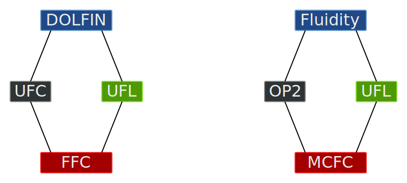
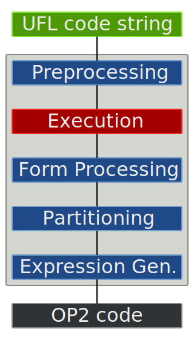
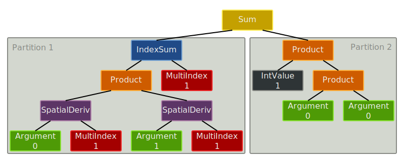

/
How do we get performance portability for the finite element method without sacrificing generality?
... to isolate numerical methods from their mapping to hardware
... as the greatest opportunities are at the highest abstraction level
... for generative, instead of transformative optimisations
... capture and efficiently express characteristics of the application/problem domain
... encapsulate specialist performance expertise and deliver domain-specific optimisations


transform integrands and spatial derivatives of forms by Jacobian determinant/inverse
evaluate preprocessed UFL input in namespace
compute form metadate using UFL algorithms
segment integrand according to expression depth
determine integrand subexpression and insert into loop nest
using UFL primitives Jacobian, Inverse and Determinant
detJ
IndexSum
... means computing the same kernel for every mesh entity (cell, facet)
... implemented as a thin wrapper on top of backend-specific linear algebra packages:
PETSc on the CPU, Cusp on the GPU
CG with Jacobi preconditioning - Dolfin: PETSc, OP2: PETSc (reference), Cusp (CUDA)
2 x 6 core Intel Xeon E5650 Westmere (HT off), 48GB RAM
Nvidia GTX480
2D unstructured, 344128 triangles, square domain
Revision 6739, Tensor representation, CPP optimisations on, form compiler optimisations off
https://github.com/gmarkall/manycore_form_compiler
https://github.com/OP2/OP2-Common
https://github.com/OP2/OP2_ROSE_Fortran